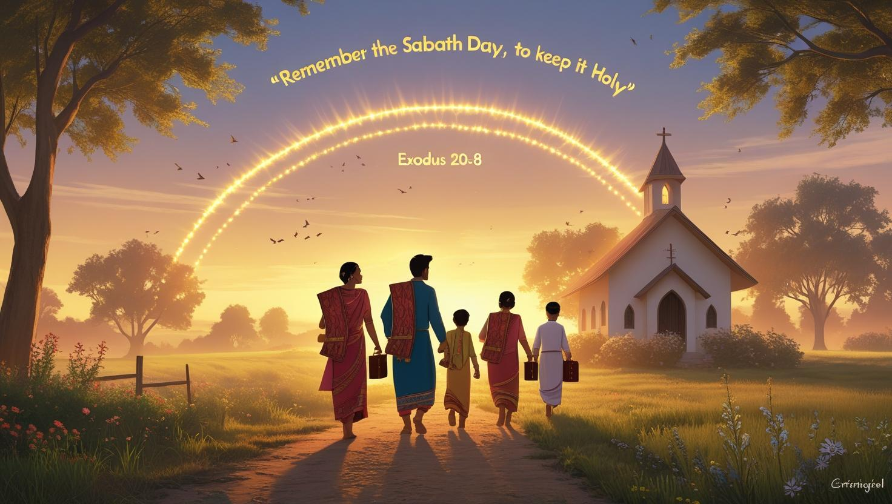

Home
About
Bible Study
Health Corner
Contacts
Bible Study Resources
“Thy word is a lamp unto my feet, and a light unto my path.” – Psalm 119:105
Topical Studies
The Story of Redemption
The Law of God

The Sabbath
Christian Living & Standards